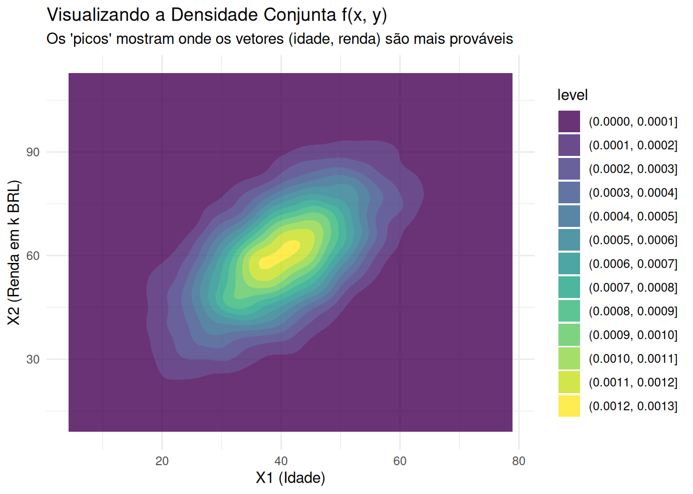
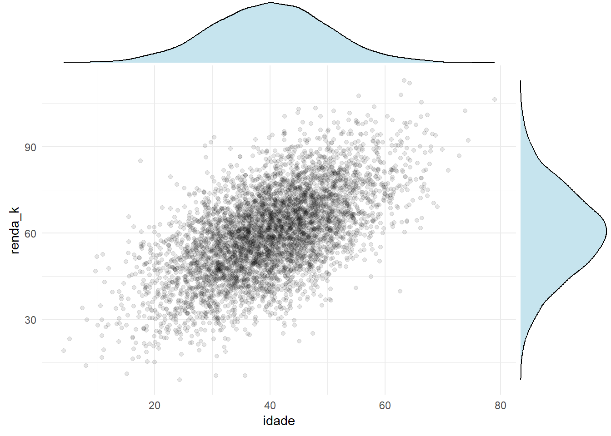

library(tidyverse)
library(MASS) # Para simular dados multivariados (vetores aleatórios)
library(ggExtra) # Para plotar densidades marginais9 Vetores Aleatórios
Contexto: Realiza-se um experimento aleatório e estamos interessados em mais de uma característica numérica do experimento.
Por exemplo, escolher ao acaso um ponto no círculo unitário. Poderíamos ter X e Y representando as coordenadas do ponto escolhido: \[ \underline\omega = (x, y) = (X(\omega), Y(\omega)), \quad \underline\omega \in \Omega = \{(x, y) : \sqrt{x^2+y^2} \le 1\} \]
Definição 9.1 (Definição 2.5)
Um vetor \(\underline{X} = (X_1, \dots, X_n)\) cujos componentes são v.a.s definidas no mesmo espaço de probabilidade \((\Omega, \mathcal{F}, \mathbb{P})\) é um vetor aleatório.
A função de distribuição \(F_{\underline{X}} = F_{X_1, \dots, X_n}\) de um vetor aleatório \(\underline{X} = (X_1, \dots, X_n)\) é definida por: \[ F_{\underline{X}}(\underline{x}) = F(x_1, \dots, x_n) = \mathbb{P}(X_1 \le x_1, \dots, X_n \le x_n), \quad x_i \in \mathbb{R} \] A função \(F_{\underline{X}}\) é também chamada de função de distribuição conjunta de \(X_1, X_2, \dots, X_n\).
Notas:
- O evento \(\{X_1 \le x_1, \dots, X_n \le x_n\} = \bigcap_{i=1}^n \{X_i \le x_i\}\). Como cada \(\{X_i \le x_i\} \in \mathcal{F}\) (pois \(X_i\) é v.a.), a intersecção finita também está em \(\mathcal{F}\). Logo, \(F_{\underline{X}}\) está bem definida.
- Note que \(\underline{X}: \Omega \rightarrow \mathbb{R}^n\).
- O espaço de probabilidade induzido por \(\underline{X}\) é \((\mathbb{R}^n, \mathcal{B}(\mathbb{R}^n), \mathbb{P}_{\underline{X}})\), em que \(\mathbb{P}_{\underline{X}}(B) = \mathbb{P}(\{\omega \in \Omega : \underline{X}(\omega) \in B\}), \forall B \in \mathcal{B}(\mathbb{R}^n)\).
- \(\mathcal{B}(\mathbb{R}^n)\) é a \(\sigma\)-álgebra de Borel em \(\mathbb{R}^n\), gerada por conjuntos da forma \((-\infty, b_1] \times \dots \times (-\infty, b_n]\).
DicaPerspectiva de Data Science
Esta é a definição formal do nosso objeto de trabalho diário.
Vetor Aleatório \(\underline{X}\): Pense nisso como o
feature vector(vetor de features) para uma única observação. É uma linha do seudata.frame.Componentes \(X_i\): São as colunas (as features): \(X_1 = \text{idade}\), \(X_2 = \text{renda}\), \(X_3 = \mathrm{tempo\_de\_sessao}\), etc.
FDA Conjunta \(F_{\underline{X}}\): Descreve o comportamento combinado de todas as features. Ela responde a perguntas como: “Qual a porcentagem de usuários com
idade <= 30Erenda <= 50000?” Entender essa distribuição conjunta é o objetivo de toda a análise de correlação e interação entre features.
Proposição 9.1 (Proposição 2.3) A função de distribuição \(F_{\underline{X}}\) de \(\underline{X} = (X_1, \dots, X_n)\) satisfaz as seguintes propriedades:
P1) \(F_{\underline{X}}(x_1, \dots, x_n)\) é não decrescente em cada uma das variáveis. Por exemplo, se \(x < y\), \(F_{\underline{X}}(x, x_2, \dots, x_n) \le F_{\underline{X}}(y, x_2, \dots, x_n)\).
P2) \(F_{\underline{X}}(x_1, \dots, x_n)\) é contínua à direita em cada uma das variáveis. Por exemplo, se \(y_n \downarrow x_1\), então \(F_{\underline{X}}(y_n, x_2, \dots, x_n) \downarrow F_{\underline{X}}(x_1, x_2, \dots, x_n)\).
P3) Para todo \(i=1, \dots, n\), \[ \lim_{x_i \to -\infty} F(x_1, \dots, x_n) = 0 \] Também, \[ \lim_{\forall i, x_i \to \infty} F(x_1, \dots, x_n) = 1 \] (limite quando todas as coordenadas convergem simultaneamente para \(\infty\)).
P4) \(F_{\underline{X}}\) é tal que, \(\forall a_i, b_i \in \mathbb{R}, a_i < b_i, \forall i=1, \dots, n\), temos que \(\mathbb{P}(a_1 < X_1 \le b_1, \dots, a_n < X_n \le b_n) \ge 0\).
DicaPerspectiva de Data Science
Assim como na FDA de 1 dimensão, estas são as “regras de sanidade” para nossas queries multi-dimensionais.
- P1 (Não-decrescente): Se você tem um filtro
(idade <= 30 E renda <= 50k)e você o “alarga” para(idade <= 31 E renda <= 50k), o número de usuários (a probabilidade) não pode diminuir. - P3 (Limites):
- \(\mathbb{P}(\text{idade} \le -\infty \text{ E } \text{renda} \le -\infty) = 0\).
- \(\mathbb{P}(\text{idade} \le +\infty \text{ E } \text{renda} \le +\infty) = 1\) (cobre 100% do dataset).
Exemplo 9.1 (Exemplo 2.10) Vamos ilustrar a necessidade de P4. Seja \(F_0\) a seguinte função definida no plano: \[ F_0(x, y) = \begin{cases} 1, & x \ge 0, y \ge 0 \text{ e } x+y \ge 1 \\ 0, & \text{c.c. (caso contrário)} \end{cases} \] Verifique que valem P1, P2 e P3. Vamos calcular: \[\begin{align*} \mathbb{P}(0 < X \le 1, 0 < Y \le 1) &= F_0(1, 1) - F_0(1, 0) - F_0(0, 1) - F_0(0, 1) + F_0(0, 0) \\ & = 1 - 1 - 1 + 0 = -1 {\color{red}\text{ !!!}} \end{align*}\]
Definição 9.2 (Definição 2.6)
Se o vetor aleatório \((X_1, \dots, X_n)\) toma somente um número finito ou enumerável de valores, é chamado de discreto. (\(\exists A \subset \mathbb{R}^n\) enumerável tal que \(\mathbb{P}(\underline{X} \in A) = 1\)).
Seja \((X_1, \dots, X_n)\) um vetor aleatório com função de distribuição F. Se existir uma função \(f(x_1, \dots, x_n) \ge 0\) tal que \[ F(\underline{x}) = F(x_1, \dots, x_n) = \int_{-\infty}^{x_n} \dots \int_{-\infty}^{x_1} f(t_1, \dots, t_n) dt_1 \dots dt_n \] \(\forall (x_1, \dots, x_n) \in \mathbb{R}^n\), então \(f\) é chamada densidade de \((X_1, \dots, X_n)\), ou densidade conjunta de \(X_1, \dots, X_n\) e, neste caso, dizemos que \((X_1, \dots, X_n)\) é (absolutamente) contínua.
DicaPerspectiva de Data Science
Isso define nossas ferramentas de visualização para múltiplas features.
- Vetor Discreto: É o que visualizamos com uma Tabela de Contingência (
table()oucrosstab()) ou um Heatmap (geom_tile). O valor em cada célula é a probabilidade conjunta \(\mathbb{P}(X = x, Y = y)\).- Ex: Cruzar
segmento_cliente(Discreta) comconverteu(Discreta).
- Ex: Cruzar
- Vetor Contínuo: É o que visualizamos com um Gráfico de Contorno (
geom_density_2d) ou um Hexbin Plot (geom_hex). A função \(f(x, y)\) é a “paisagem 3D” que esses gráficos representam. Os “picos” dessa paisagem são as regiões onde seus dados são mais densos (ex: “jovens com baixa renda”).
Proposição 9.2 (Proposição 2.4)
Se \(\underline{X}\) é discreto, então \[ \mathbb{P}_{\underline{X}}(B) = \mathbb{P}(\underline{X} \in B) = \sum_{i: \underline{x}_i \in B} \mathbb{P}(\underline{X} = \underline{x}_i), \quad \forall B \in \mathcal{B}^n \]
Se \(\underline{X}\) é absolutamente contínua, então \[ \mathbb{P}_{\underline{X}}(B) = \mathbb{P}(\underline{X} \in B) = \int \dots \int_{B} f(x_1, \dots, x_n) d\underline{x}, \quad \forall B \in \mathcal{B}^n \]
Comentários:
Se \(F(\underline{x})\) é a função de distribuição de \((X_1, \dots, X_n)\), para cada \(k=1, \dots, n\), definimos a função de distribuição marginal de \(X_k\) por \[ F_{X_k}(x_k) = \lim_{x_j \to \infty, \forall j \neq k} F_{\underline{X}}(x_1, \dots, x_n) \]
Se \(\underline{X}\) é discreto, a função de probabilidade conjunta de \(X_1, \dots, X_n\) é \[ p_{\underline{X}}(\underline{x}) = \mathbb{P}(X_1 = x_1, \dots, X_n = x_n) \] e satisfaz:
- \(p_{\underline{X}}(\underline{x}) \ge 0, \forall \underline{x} \in \mathbb{R}^n\)
- \(\sum_{\underline{x}} p_{\underline{X}}(\underline{x}) = 1\).
A função de probabilidade marginal de \(X_k\) é obtida somando-se nas demais variáveis: \[ p_{X_k}(x_k) = \mathbb{P}(X_k = x_k) = \sum_{x_1} \dots \sum_{x_{k-1}} \sum_{x_{k+1}} \dots \sum_{x_n} \mathbb{P}(X_1 = x_1, \dots, X_n = x_n) \]
Se \(\underline{X}\) é contínuo e possui densidade conjunta, um candidato é \[ f_{\underline{X}}(\underline{x}) = \frac{\partial^n}{\partial x_1 \dots \partial x_n} F_{\underline{X}}(\underline{x}) \] A função densidade marginal de \(X_k\) é obtida integrando-se nas demais variáveis: \[ f_{X_k}(x_k) = \int_{\mathbb{R}^{n-1}} \dots \int f_{\underline{X}}(x_1, \dots, x_n) dx_1 \dots dx_{k-1} dx_{k+1} \dots dx_n \] A densidade conjunta satisfaz:
- \(f(\underline{x}) \ge 0, \forall \underline{x} \in \mathbb{R}^n\)
- \(\int \dots \int_{\mathbb{R}^n} f(\underline{x}) d\underline{x} = 1\).
DicaPerspectiva de Data Science
O conceito de Distribuição Marginal é um pilar fundamental da Análise Exploratória de Dados (EDA) e da redução de dimensionalidade.
- Realidade: Seus dados são um
data.framecom 50 colunas (um vetor aleatório em \(\mathbb{R}^{50}\)). A “verdade” é a densidade conjunta \(f(x_1, \dots, x_{50})\), que é computacionalmente intratável e impossível de visualizar. - Ato de “Marginalizar”: Quando você decide “vou plotar um histograma só da
idade”, você está realizando a operação matemática de “integração marginal”. - Resultado: Um
ggplot(aes(x=idade)) + geom_histogram()é a visualização da função densidade marginal \(f_{idade}(x)\). Você “integrou” (efetivamente, somou ou ignorou) todas as outras 49 features para focar em apenas uma. O mesmo vale para uma tabela de contagem (table()) de uma única variável discreta.
Exemplo 9.2 (Exemplo 2.11) Seja o vetor aleatório \((X, Y)\) com f.p.c. \[ \mathbb{P}(X=x, Y=y) = c(x^2 + y^2) I_{\{0, 1, 2, 3\}}(x) I_{\{0, 1\}}(y) \] Obtenha o valor de c. \[ \begin{align*} \sum_{x=0}^3 \sum_{y=0}^1 c(x^2 + y^2) &= 1 \\ \Rightarrow c \sum_{x=0}^3 [(x^2 + 0^2) + (x^2 + 1^2)] &= 1 \\ \Rightarrow c \sum_{x=0}^3 (2x^2 + 1) &= 1 \\ \Rightarrow c [(0+1) + (2(1)+1) + (2(4)+1) + (2(9)+1)] &= 1 \\ \Rightarrow c [1 + 3 + 9 + 19] &= 1 \\ \Rightarrow 32c = 1 \Rightarrow c = 1/32 \end{align*} \]
Exemplo 9.3 (Exemplo 2.12) Seja \((X, Y)\) um vetor aleatório contínuo com densidade conjunta \[ f_{X,Y}(x, y) = c(x+y) I_{[0, 1]}(x) I_{[0, x]}(y) \]
Obtenha o valor de c. \[ \begin{align*} \int_0^1 \int_0^x c(x+y) dy dx &= 1 \\ \Rightarrow c \int_0^1 \left[ xy + \frac{y^2}{2} \right]_0^x dx &= 1 \\ \Rightarrow c \int_0^1 \left( x^2 + \frac{x^2}{2} \right) dx &= 1 \\ \Rightarrow c \int_0^1 \frac{3x^2}{2} dx &= 1 \\ \Rightarrow \frac{3c}{2} \left[ \frac{x^3}{3} \right]_0^1 &= 1 \\ \Rightarrow \frac{3c}{2} (\frac{1}{3}) = \frac{c}{2} = 1 \Rightarrow c = 2 \end{align*} \]
Calcule \(\mathbb{P}(1/2 < X < 1, 1/4 < Y < 1/2)\). \[ \begin{align*} \int_{1/2}^1 \int_{1/4}^{1/2} 2(x+y) dy dx &= 2 \int_{1/2}^1 \left[ xy + \frac{y^2}{2} \right]_{1/4}^{1/2} dx \\ &= 2 \int_{1/2}^1 \left[ (x\frac{1}{2} + \frac{1}{8}) - (x\frac{1}{4} + \frac{1}{32}) \right] dx \\ &= 2 \int_{1/2}^1 (\frac{x}{4} + \frac{3}{32}) dx \\ &= 2 \left[ \frac{x^2}{8} + \frac{3x}{32} \right]_{1/2}^1 \\ &= 2 \left[ (\frac{1}{8} + \frac{3}{32}) - (\frac{(1/2)^2}{8} + \frac{3(1/2)}{32}) \right] \\ &= 2 \left[ (\frac{4+3}{32}) - (\frac{1/4}{8} + \frac{3/2}{32}) \right] \\ &= 2 \left[ \frac{7}{32} - (\frac{1}{32} + \frac{3}{64}) \right] \\ &= 2 \left[ \frac{7}{32} - \frac{2+3}{64} \right] = 2 \left[ \frac{14}{64} - \frac{5}{64} \right] = 2 \left( \frac{9}{64} \right) = \frac{9}{32} \end{align*} \]
Calcule \(\mathbb{P}(Y > X/4)\). \[ \begin{align*} \int_0^1 \int_{x/4}^x 2(x+y) dy dx &= 2 \int_0^1 \left[ xy + \frac{y^2}{2} \right]_{x/4}^x dx \\ &= 2 \int_0^1 \left[ (x^2 + \frac{x^2}{2}) - (\frac{x^2}{4} + \frac{(x/4)^2}{2}) \right] dx \\ &= 2 \int_0^1 \left( \frac{3x^2}{2} - \frac{x^2}{4} - \frac{x^2}{32} \right) dx \\ &= 2 \int_0^1 \left( \frac{48x^2 - 8x^2 - x^2}{32} \right) dx \\ &= 2 \int_0^1 \frac{39x^2}{32} dx = \frac{39}{16} \left[ \frac{x^3}{3} \right]_0^1 = \frac{39}{16} \cdot \frac{1}{3} = \frac{13}{16} \end{align*} \]
Obtenha as densidades marginais de X e de Y, isto é, \(f_X(x)\) e \(f_Y(y)\). \[ \begin{align*} f_X(x) &= \int_0^x 2(x+y) dy = 2 \left[ xy + \frac{y^2}{2} \right]_0^x \\ &= 2 (x^2 + \frac{x^2}{2}) = 2(\frac{3x^2}{2}) = 3x^2, \quad x \in (0, 1) \end{align*} \] Obs: \(X \sim\) Beta(3, 1), \(\qquad x^{3-1}(1-x)^{(1-1)}.\)
DicaPerspectiva de Data Science
Note o que aconteceu na parte (d). Para encontrar a densidade marginal \(f_X(x)\), o cálculo exigiu “integrar \(y\) para fora” da densidade conjunta \(f_{X,Y}(x, y)\).
Isso é a prova matemática do que falamos antes: O histograma de \(X\) (a marginal) é o resultado de “colapsar” ou “somar” toda a informação da dimensão \(Y\) (a conjunta).
9.1 Implementação Prática em R
Vamos demonstrar esses conceitos visualmente. O data.frame é o nosso vetor aleatório.
O Vetor Aleatório (A Linha do Data Frame)
Vamos simular um dataset (nosso \(\Omega\)) de 5000 usuários. Cada usuário \(\omega\) terá um vetor aleatório \(\underline{X} = (X_1, X_2)\) onde:
- \(X_1\) =
idade(Normal, média 40) - \(X_2\) =
renda_k(Normal, média 60, em milhares de reais)
Vamos induzir uma correlação positiva: pessoas mais velhas tendem a ter renda maior.
set.seed(42)
N_usuarios <- 5000
# Parâmetros
mu <- c(idade = 40, renda_k = 60) # Médias
# Matriz de Covariância (var=100 e 225, cov=90 -> corr=0.6)
sigma <- matrix(c(100, 90,
90, 225), ncol = 2)
# mvrnorm = "multivariate random normal"
# Nossas 5000 "linhas" (vetores aleatórios)
vetores_aleatorios <- MASS::mvrnorm(n = N_usuarios, mu = mu, Sigma = sigma)
# Converter para um data.frame (tibble)
Omega_data <- as_tibble(vetores_aleatorios)head(Omega_data)| idade | renda_k |
|---|---|
| 50.02146 | 80.27825 |
| 29.42800 | 55.01789 |
| 40.77736 | 66.35290 |
| 45.73767 | 68.77947 |
| 45.19411 | 64.80859 |
| 39.95462 | 58.04827 |
FDA Conjunta: \(\mathbb{P}(X_1 \le x_1, X_2 \le x_2)\)
Como calculamos \(F(30, 40) = \mathbb{P}(\text{idade} \le 30 \text{ E } \text{renda\_k} \le 40)\)? Simplesmente “filtramos” o dataset e contamos a proporção.
prob_conjunta <- Omega_data |>
filter(idade <= 30, renda_k <= 40) |>
summarise(prob = n() / N_usuarios) |>
pull(prob)
cat("Probabilidade Conjunta P(idade <= 30, renda_k <= 40):", scales::percent(prob_conjunta), "\n")Probabilidade Conjunta P(idade <= 30, renda_k <= 40): 5% Densidade Conjunta: \(f(x_1, x_2)\)
Esta é a “paisagem 3D” das nossas features. Usamos geom_density_2d para visualizá-la como um mapa de contorno. Os picos são onde os dados são mais densos (ao redor de 40 anos e 60k de renda).
ggplot(Omega_data, aes(x = idade, y = renda_k)) +
geom_density_2d_filled(alpha = 0.8) +
labs(
title = "Visualizando a Densidade Conjunta f(x, y)",
subtitle = "Os 'picos' mostram onde os vetores (idade, renda) são mais prováveis",
x = "X1 (Idade)",
y = "X2 (Renda em k BRL)"
) +
theme_minimal()
Densidade Marginal: \(f_X(x)\)
O que acontece se “integrarmos \(y\) para fora”? (ou seja, se ignorarmos a renda_k)? Obtemos a densidade marginal da idade, que é apenas o seu histograma!
O pacote ggExtra nos permite ver a conjunta e as marginais no mesmo gráfico.
# 1. Plotar a conjunta (scatter plot)
p <- ggplot(Omega_data, aes(x = idade, y = renda_k)) +
geom_point(alpha = 0.1) +
theme_minimal()
# 2. Adicionar as marginais
# type = "histogram" ou "density"
ggExtra::ggMarginal(
p,
type = "density",
fill = "lightblue",
alpha = 0.7
)
Este gráfico final é a melhor visualização:
- Gráfico Central: A distribuição conjunta (aqui como scatter plot).
- Gráfico no Topo: A densidade marginal \(f_X(\text{idade})\), calculada “integrando” (colapsando) todos os pontos de Y.
- Gráfico à Direita: A densidade marginal \(f_Y(\text{renda\_k})\), calculada “integrando” (colapsando) todos os pontos de X.